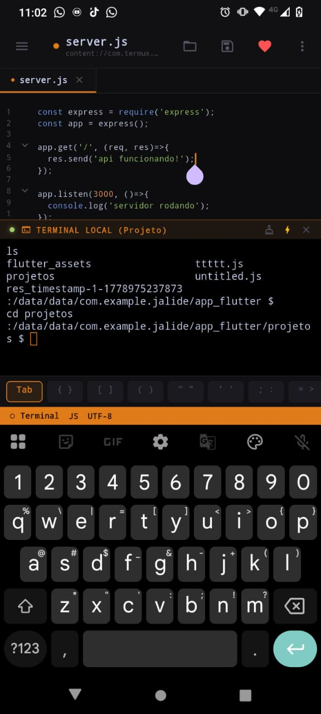

A IDE mobile mais poderosa e intuitiva para desenvolvedores que não param. Totalmente open source, com suporte a SSH, Terminal, Explorador de Arquivos avançado e muito mais.

Acesso total ao sistema e conexões remotas direto do seu celular.
Navegue no seu servidor com um explorador de arquivos inteligente e edição em tempo real.
Navegação fluida entre pastas, breadcrumbs e suporte a múltiplos projetos.
Construído com Flutter para garantir fluidez e rapidez em qualquer dispositivo Android.
O código do JALIDE é aberto para estudo, auditoria, melhorias e contribuições da comunidade.
O JALIDE é totalmente open source. Desenvolvedores, designers, testers e pessoas curiosas são bem-vindas para propor recursos, corrigir bugs, melhorar a experiência mobile e levar a IDE mais longe.
Abra uma issue, envie um pull request ou participe das discussões sobre os próximos passos da IDE.
github.com/deartis/jalideJunte-se a desenvolvedores que estão transformando produtividade mobile em um projeto aberto e colaborativo.
BAIXAR AGORA